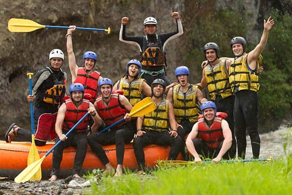
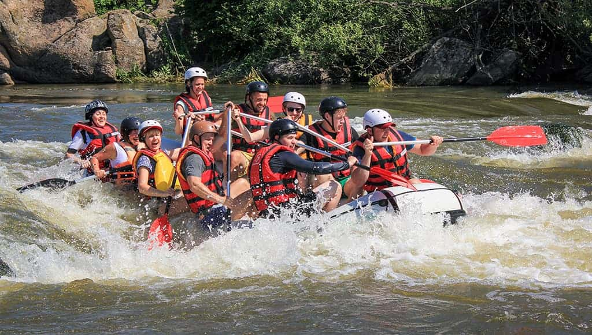
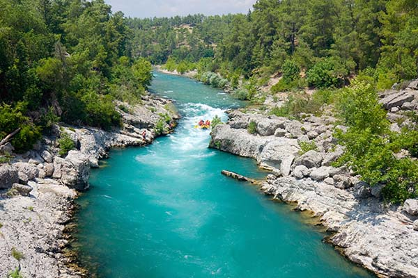
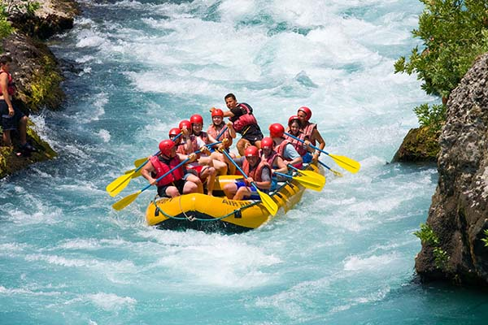
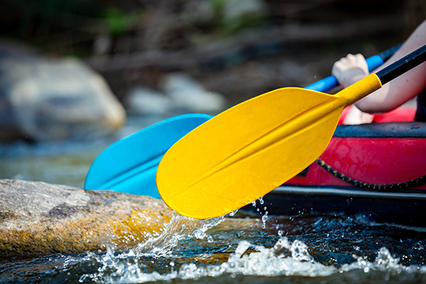
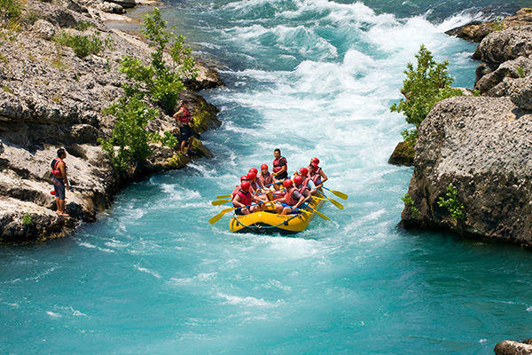
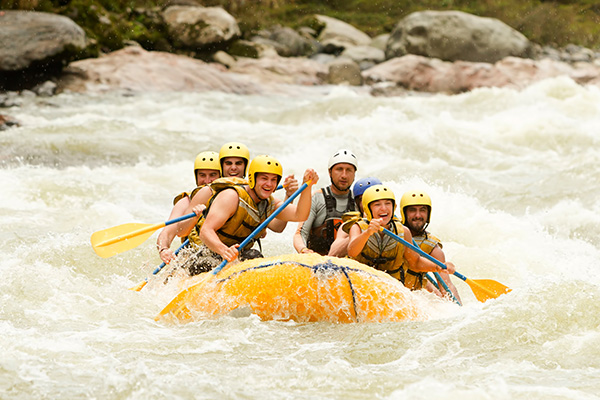

At White Water Rafting Company, we are passionate about providing thrilling and unforgettable rafting experiences. Our team of experienced guides is dedicated to ensuring your safety and enjoyment on the water. Ours Up!


At White Water Rafting Company, we are passionate about providing thrilling and unforgettable rafting experiences. Our team of experienced guides is dedicated to ensuring your safety and enjoyment on the water. Ours Up!
White Water Rafting Company was founded in 1995 by a group of adventure enthusiasts who wanted to share their love for the great outdoors. Starting with just a handful of rafts and a passion for exploration, the company grew rapidly.

Over the years we expanded our tours and guides, becoming a premier provider of whitewater experiences. Safety, excitement, and nature form the core of everything we do.



